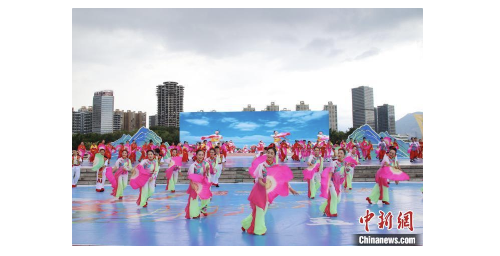
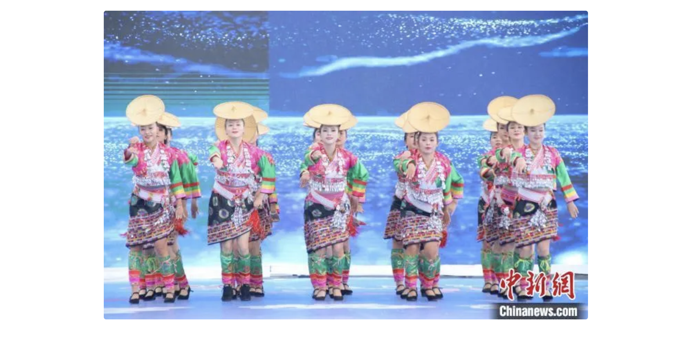

“云南舞蹈大家跳”走进玉溪 精彩纷呈展魅力
有时候经常回想一些奇奇怪怪的问题，来虐自己的脑细胞，有兴趣的可以帮我看一下部分问题，如果你有更好的答案，欢 迎在我的博客留言板交流。 中新网昆明9月30日电 (黄兴鸿)30日，“有一种叫云南的生活——云南舞蹈大家跳”玉溪专场在云南省玉溪市聂耳音乐广场 举行。一系列精心编排的舞蹈节目，带领观众领略该市民族舞蹈的风采及风土人情，感受“有一种叫云南的生活”。  云南省自古就是歌舞之乡，云南舞蹈是中华舞蹈宝库中重要的组成部分。“云南舞蹈大家跳”这一活动覆盖该省16个州(市) 129个县(市、区)，贯穿2024年全年，旨在传承和弘扬云南优秀民族民间舞蹈，促进文旅业深度融合发展，加快旅游产品、 业态、模式创新和服务创优，推动文旅业高质量发展，鲜活地呈现“有一种叫云南的生活”。 玉溪，地处滇中，碧玉清溪，因水得名。素有“生命起源地”“聂耳故乡”“花灯之乡”“高原水乡”等美誉。 “好长时间没跟这么多人在一起崴花灯了，真是太开心啦！”当日的活动在花灯舞蹈《崴灯》中拉开序幕，演员热情奔放的 舞蹈，吸引观众跟着舞动起来。  当日的专场分“魅力玉溪”“多彩玉溪”“和谐玉溪”3个篇章。玉溪市各县(市、区)多家单位及团体逾800名演员参与演出， 为观众呈现花腰傣舞蹈《梦幻·帕织秧》《裙儿摆摆秧箩情》《花开梦圆》，彝族舞蹈《烟盒胡琴调》《琴儿声声鼓生生》《彝 乡烟盒醉月亮》《花鼓飞花》，哈尼族舞蹈《踩田克啰》《早嘟度嘟》，蒙古族舞蹈《悦喜喀卓》，苗族舞蹈《帽儿尖尖帽儿 圆》，花灯舞蹈《好久不到这方来》。精湛的舞技，多彩的民族服装，让观众感受到了玉溪民族舞蹈的独特魅力。 当日的活动由云南省文化和旅游厅主办，中共玉溪市委宣传部、中共玉溪市委统战部(玉溪市民族宗教事务局)承办。